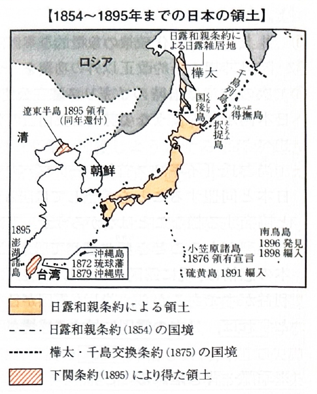
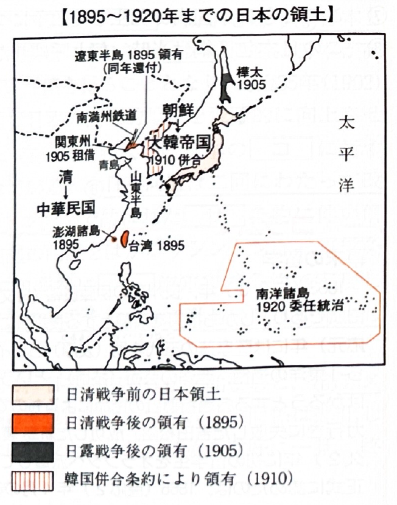
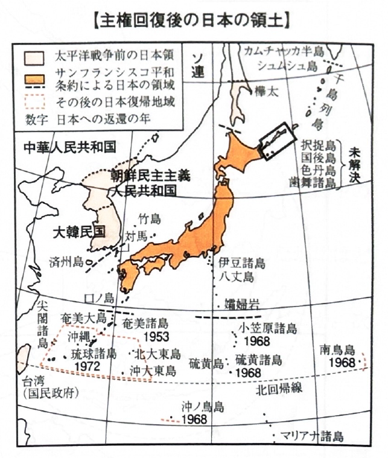

006 日本の統治領域の変化

日露和親条約
千島列島は「択捉島」以南を日本領、「得撫島」以北をロシア領とした。
樺太は国境を定めず「両国人雑居の地」とした。
小笠原諸島の領有宣言
江戸幕府が1861年に、明治政府が1875年に領有を宣言（翌年通告）。
琉球処分
1871年に鹿児島県へ編入 → 1872年に琉球藩を設置 → 1879年に沖縄県を設置し、完全な日本領とした。
樺太・千島交換条約
樺太全島をロシア領とし、代わりに千島全島（占守島まで）を日本領とした。

下関条約（日清戦争）
遼東半島・台湾・澎湖諸島を獲得し、台湾総督府を設置した。
※ただし、露・独・仏による三国干渉により、遼東半島は清国に返還した。
ポーツマス条約（日露戦争）
旅順・大連（関東州）の租借権と、北緯50度以南の南樺太を獲得。
関東州には関東都督府（のちに関東軍と関東庁）を設置した。
韓国併合条約
韓国を併合して「朝鮮」と改称し、朝鮮総督府を設置した。
ヴェルサイユ条約（第一次世界大戦）
赤道以北の旧ドイツ領南洋諸島の委任統治権を獲得し、南洋庁を設置した。
満州事変
満州の主要地域を占領し、満州国を建国。日本軍（関東軍）が駐屯し、日本の傀儡国家として支配した。のちに執政であった溥儀を皇帝とする帝政へ移行した。
日中戦争
上海、南京などの主要都市を占領。1940年には汪兆銘を首班とする親日の新国民政府を南京に樹立した。
太平洋戦争
開戦半年で、英領マレー半島・シンガポール・香港・ビルマ、蘭領東インド、米領フィリピンなどを制圧し軍政下に置いた。しかし、1942年6月のミッドウェー海戦での敗北を機に後退が始まった。

サンフランシスコ平和条約
朝鮮の独立承認。
台湾・澎湖諸島・千島列島・南樺太のすべての権利を放棄した。
また、奄美・沖縄・小笠原諸島のアメリカによる信託統治を承認した。
奄美諸島返還協定
小笠原諸島返還協定
沖縄返還協定
佐藤栄作首相とニクソン大統領との間で調印され、翌年（1972年）に本土復帰を果たした。
-
北方領土問題（ロシアとの対立）
ヤルタ協定に基づくソ連の千島列島占領に対し、日本は「択捉島以南の北方四島は固有の領土である」と主張しています。北方四島 国後島、択捉島、歯舞群島、色丹島 日ソ共同宣言
(1956)ソ連は、平和条約締結後に「歯舞・色丹」の2島を引き渡すことを約束したが、国後・択捉の返還には応じていない。 近年の動向 1997年の橋本・エリツィン会談などで解決に向けた合意はされたが、未だ平和条約締結と領土問題の解決には至っていない。 -
竹島問題（韓国との対立）
島根県の隠岐諸島北西に位置する竹島（韓国名：独島）の領有権をめぐり、韓国と対立しています。日本は歴史的にも国際法上も固有の領土であると主張していますが、現在は韓国が不法占拠を続けています。 -
尖閣諸島問題（中国・台湾との対立）
沖縄県の八重山諸島北方に位置する尖閣諸島の領有権をめぐり、中国および台湾と対立しています。日本は有効に支配しており「解決すべき領有権の問題は存在しない」という立場ですが、周辺海域での緊張が続いています。